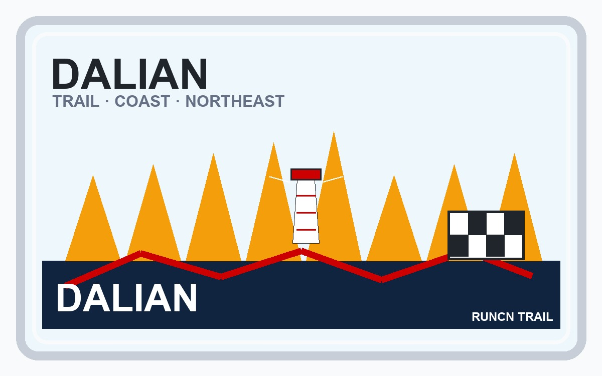

RUN50 DISPATCH · RUNCN
RunCN 第18站 · 大连越野 · 越过山丘，在大连
RunCN · 中国跑马故事
Vlog 开场位｜Runcn
OPENING NOTE
第一场真正意义上的越野赛，去大连西海岸，越过山丘，也看见东北的自由与斑驳。
本文速记
第一场真正意义上的越野赛，去大连西海岸，越过山丘，也看见东北的自由与斑驳。

奖牌质感封面｜Runcn

2019年6月9日13点01分 @Arsenan
逆着背影婆娑的人流
向着那座荒芜的山丘
挥挥衣袖
越过山丘

越野：心中的江湖
小时候痴迷武侠，《神雕侠侣》中小龙女在山间纵身起舞，轻盈曼妙飘然若仙；《笑傲江湖》里日月神教任盈盈为令狐冲抚琴绿竹深巷，一曲既出，两人不禁情愫暗生；《倚天屠龙记》决战光明顶时，周芷若回眸一剑，无忌无言，可是童年的我还看不懂这江湖；只知道《射雕英雄传》中众高手比武称雄于华山之巅，正派大侠终会笑到最后。在我儿时的记忆中，山野总是充满着故事，或有美丽的姑娘，或有俊朗的大侠，或二者兼而有之。
上初中痴迷打游戏，上课时总幻想着如《武林群英转》里的小虾米一样，游走于山川大海，拯救苍生于水火；上大学后痴迷跑马，尽管每次都跑得疲惫不堪叫苦不迭，但每每这个时候，总会想起《仙剑》中景天的“仙风云体”，幻想着将所有的疲劳瞬间打散，然后用最帅的姿态冲向终点。只是这样的经历常常上演单曲循环，报名时跃跃欲试比赛后却怅然若失。终于，当马拉松已经不足以点燃我的兴奋点，我知道，越野的篇章是时候开启了……
作为我第一场真正意义上的越野赛，选择大连，不仅仅是因为身为东北人的骄傲，也是痴迷于大连这座城，痴迷于大连西海岸的风情。

大连：自由斑驳
已经跑过几十座城，所以当决定前往大连时，心中早已笃定，“不会过分期待，不会冒然渲染。”

大连跨海大桥夜景。图/阿森男 @Arsenan
大连之于我，是东北的南方，亦是开启新挑战的兴奋之都。化身山海狂人之前，我喜欢先读城。
林语堂先生曾在《生活的艺术》中写到：“我常看见上海的富翁，占着小小的一方地皮，中间有个一丈见方的小池，旁边有一个蚂蚁费三分钟即能够爬到顶上的假山，便自以为妙不可言，他不知道住在山腰茅屋中的穷人，竟可以拿山湖边上全部的景物作为自己的私产。”
大连的景物，可以从大海中找到痕迹，大海的艺术，是深耕于城市深处的文艺和浪漫。

航拍大连跨海大桥。图/阿森男 @Arsenan
大海，仿佛就是这一片天地的入口。
滨海路沿海蜿蜒，贯穿大连东西海岸，壮丽秀美。一方城堡坐落于山海之间，似心头那抹朱砂令人钟情。

航拍一方城堡和滨海公路。图/阿森男 @Arsenan

航拍滨海公路。图/阿森男 @Arsenan

航拍滨海公路。图/阿森男 · 2 @Arsenan
填海而出的星海广场，是大连的城市名片，夜晚的喷泉灯光秀，为这张名片点燃了最耀眼的花边。不远处的跨海大桥和灯塔，在夜色的点缀下，晃晃动人。

星海广场音乐喷泉。图/阿森男 @Arsenan

星海广场跨海大桥。图/阿森男 @Arsenan

星海广场灯塔。图/阿森男 @Arsenan
在小平岛与海鸥们结伴而行，从欧式建筑环绕的帆船码头驶向茫茫大海。情侣们一人给海鸥喂食，默契的另一半则举起手机，定格下了结缘大连的浪漫瞬间。

小平岛码头。图/阿森男 @Arsenan

小平岛帆船出海。图/阿森男 @Arsenan
这里因海而文明的景点实在太多，比如海韵公园，棒棰岛，老铁山。若要远足大连，也请不要错过。

海之韵公园。图/阿森男 @Arsenan

棒棰岛。图/阿森男 @Arsenan

黄渤海分界线。图/阿森男 @Arsenan
大海，是我了解大连的一个切入口，在有限的时间里漫步在这座城，让我印象深刻的还有色彩斑斓的轻轨电车；说话不那么东北的海蛎子味大连人；以及这里的高校林立和美女如云。如果说要有遗憾，那也许就是错过了大连的老式有轨电车和颜值爆表的美女骑警。

大连轻轨。图/阿森男 @Arsenan
美食就不多说了，好像大连的海鲜挺棒的，可惜我不爱吃。

西海岸50km：翻过那座山，趁还没白头
跑了太多的马拉松，一直想尝试点新的东西。
UTO大连西海岸越野赛正值端午假期，并且赶在我毕业答辩和毕业典礼间的空档期，再加上自己的东北情节和大工好哥们的呼唤，也没太多犹豫，即便错过早鸟价，也还是决定报名50公里挑战一下。

UTO大连西海岸越野路标。图/阿森男 @Arsenan
赛前参加技术会，见到很多越野发烧友，还很幸运的抽到了299的紧身衣，赛事总监小库里为大家解析赛道，我还作为中奖选手和各位大佬合影，一切都很新鲜。

中奖幸运儿们。图/UTO @Arsenan
比赛日，乘坐组委会大巴来到横山景区，越野的排场不比马拉松，但看大家的装备，就知道足够硬核。

横山景区牌坊+越野拱门。图/阿森男 @Arsenan

50km组大合影。图/UTO @Arsenan
发枪起跑，开始的路程以平路为主，和普通的路跑差别不大，唯一的插曲可能就是4公里处的一个岔口没有指引，大家都停下来不知所措，我是觉得无所谓，趁机休息一下。

迷茫的分岔口。图/阿森男 @Arsenan
接下来的赛程终于有点越野的感觉了，先是一座山，然后是大草甸，我是真的后悔没有穿小腿套，跑过杂草地时被刮的生疼。不过这时体力还很充沛，翻越山坡的瞬间总觉得有那么一两秒是在飞，很舒服。

穿越大草甸。图/阿森男 @Arsenan
下山就是CP1，打卡，补西瓜之后，天色大变，暴雨来袭。虽然赛前对雨战早有准备，但这雨下的确实夸张，瞬间山路就流成小河，大家结伴而行，有说有笑，虽然浑身上下都是浸润的雨水，但翻山小队周围却满是欢乐的空气。

穿越大森林。图/小神仙 @Arsenan

海带厂。图/阿森男 @Arsenan
翻过这座山，雨也停了，接着随风而来的是一股浓郁的海腥味，山下的海带厂正一车一车的运送着海带，工厂的工人们也不时的在雨后悠闲漫步，注视着跑过的选手。

西海岸。图/杨墨 @Arsenan
路过海带厂，是一段很长的海岸线，我也没心情看风景，只是觉得这海滩的沙子路是真难跑，好不容易看到摄影师，摆个pose。接着是一段小镇赛道，比较轻松，很快就到了CP2。

西海岸。图/阿森男 @Arsenan

小镇木道。图/李鑫世 @Arsenan
觉得体能还好，简单灌了壶水，继续前行。只是没想到下面竟是漫漫14公里的山路。正值正午，天气炎热。连续的爬升下降，体能消耗很大。这段路只能独处，在山间林间慢慢踱步，有时候简单的一公里，也要用上接近半个小时。也许这就是越野的魅力吧，无需喧闹，踽踽而行。没有哪个时刻，让我如此敬佩那些百公里的大神们，是怎样的意志和体力支撑他们在白天黑夜里矢志前行。我敬仰眼前的群山，也不断告诉自己，越过山丘，也许就是一个崭新的自己。

连续爬升。图/阿森男 @Arsenan
终于在一个陡峭的大下坡之后，CP3出现了。有泡面有水国有黄桃罐头，还有热情的美女志愿者，这次有了经验，补满水，再带上两个香蕉，休息了好大一会，才又出发。

CP3。图/阿森男 @Arsenan
小跑加散步上了海边悬崖，没想法却跑错了路，不过错误的路却有着不错的风景，正在我欣赏海景的时候，就看到前面的丽丽姐和她的小老弟从老远又跑了回来，说路标没了，跑错了。就这样，我们一起吐槽着组委会，又折返到正确的路上，顺便还救了几波正要前往错路的同志们。

海边悬崖。图/阿森男 @Arsenan

海边山崖。图/阿森男 @Arsenan
海边悬崖景色不错，不过也很陡峭，有的路段需要手脚并用才能通过。接着就是一段传说中的军管区和连绵的大山，体力还行，就是磨了几个泡，跑起来有点费劲，不时被几个妹子超过，我也是突然打了鸡血一样猛追那么10米，然后就不行了，索性就慢慢走吧，被超过的次数多了，也就麻木了。

50/100km岔路志愿者。图/阿森 @Arsenan

摆拍。图/志愿者 @Arsenan
下山之后，穿过一段公路，就到了CP4，初见曙光，胜利在望。

CP4，白衣服小姐姐超漂亮。图/阿森 @Arsenan
最后的8.9公里，说实话不难，但脚上的泡却不这么认为，公路加一座不高的山，起伏有限，对我来说却异常艰难，8个小时的时候，佳明没电了，华米跟上。

最后一座山 @Arsenan
枯燥的下山路段之后，进入横山风景区，突然豁然开朗。落日余晖下的横山普陀景区美到极致，和路过的僧人闲聊，也使最后的路段充满禅意。

横山景区。图/阿森男 @Arsenan

横山景区。图/阿森男 · 2 @Arsenan

巧遇和尚，唠了好一会。图/阿森男 @Arsenan
终点近在咫尺，DJ大声的放着我的名字，第一次感受冲线的仪式感，兴奋，喜悦，夹杂着略带咸味的汗水，瞬间觉得一切都很值得。50公里越野，是新的里程碑。

冲线。图/之火传媒 @Arsenan

奖牌。图/阿森男 @Arsenan
赛后取了包，终点有烧鸡，啤酒，炒饭，特别开心的是在终点处加了长春的丽丽姐和50公里女子冠军蓉蓉姐为好友，都是超级硬核的大神，也是我榜样。有点遗憾的是，完赛服没有取，我竟不知道居然还有完赛服！

赛后补给。图/阿森男 @Arsenan
总之，越野对我来说不算简单，能用文字记录一路的风景也弥足珍贵。趁还没白头前，也许还会有更多的里程碑吧，其实白了头又何妨？挑战自我的路上，早已模糊了年龄。喜欢不可能少女冰姐的一句话：“不是不可能，而是有多想。”

黄渤海分界线：这是一本东北的近代史
赛后一天，我去了大连旅顺口，这颗镶嵌在黄海与渤海中间的明珠。

旅顺军港。图/阿森男 @Arsenan

航拍黄渤海分界线灯塔。图/阿森男 @Arsenan
旅顺闻名于军港，从1880年至1890年，李鸿章筹建北洋水师，经营旅顺港。使旅顺口成了享誉世界的军事要塞，并称世界五大军港之一，这里是经营东北的一个绝佳出海口，从黄渤海分界线延伸出的满蒙铁路，则直至东北腹地。

清大炮。图/阿森男 @Arsenan

旅顺潜艇博物馆。图/阿森男 @Arsenan
当沙俄的远东计划和日本的大陆计划交织在了一起，日俄战争于此爆发。之后便开始了日本对大连长达40年的殖民统治，再加上苏联和沙俄时期的经营，使这里依旧保留着许多日式和俄式的建筑。

日俄监狱旧址。图/阿森男 @Arsenan
日俄监狱见证中国屈辱的近代史，而不远的白玉塔则是日军留下的侵华罪证之一。如今的白玉塔，落满了和平鸽，在这里远望旅顺军港，一排排中国军舰正蓄势起航。苏联在1955年归还大连时留下了胜利塔和友谊塔，三塔阅尽历史，自此，一个时代落幕。

白玉塔边的 @Arsenan
殖民者为大连为东北留下了中国当时最完整最先进的工业体系，东北也一跃成为“共和国长子”，风光无限。闯关东而来的先民们勤劳朴实，深耕于东北这片土地。就连很多南方人的第一桶金也发迹于东北。

《闯关东》景区的东北秧歌。图/阿森男 @Arsenan

《闯关东》景区的东北老宅。图/阿森男 @Arsenan
但对于90后的我来说，黑土地并不温暖。曾经关外与国外文化的输入，让20世纪初的东北迅速发展，但改革开放后，东北难以适应日新月异的外界环境，发展陷入滞缓。就连我的家乡哈尔滨也越来越难留住人才，曾经喊着我爱我家的同学们也都散落到了全国各地。

《闯关东》景区睡着的猫。图/阿森男 @Arsenan
如今的东北就像一个山涧里望着天空的小孩，孩子们从这片群山围绕的天空张望着外面的世界，他只是看着天空，却不想走出大山。山外的世界让他畏惧，山内的安稳让他留恋。
也许他不再是共和国长子，他只是亟需一个越过山丘的机遇，他也渴望长大成人。
越过山丘，在大连，在东北......
留言 / 访问次数
FIELD NOTE 01
跑完也说两句
Run50
不用注册账号即可提交留言，提交后会直接显示。
RUN50 FINISH LINE
这一站，收进地图。
第一场真正意义上的越野赛，去大连西海岸，越过山丘，也看见东北的自由与斑驳。 跑完这一篇，Run50 的故事又多了一块颜色。
18
RUN50
RUNCN
MARK
站
NOTE
如果这一站也勾起了你的某段跑步记忆，欢迎在公众号留言里接着聊。别太正式，像赛后坐下来喝一口水那样就行。
文字 / 编辑 / 排版 · Arsenan